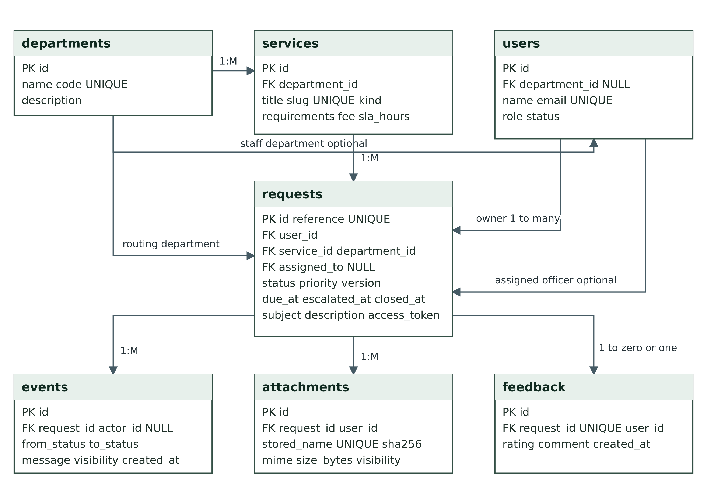
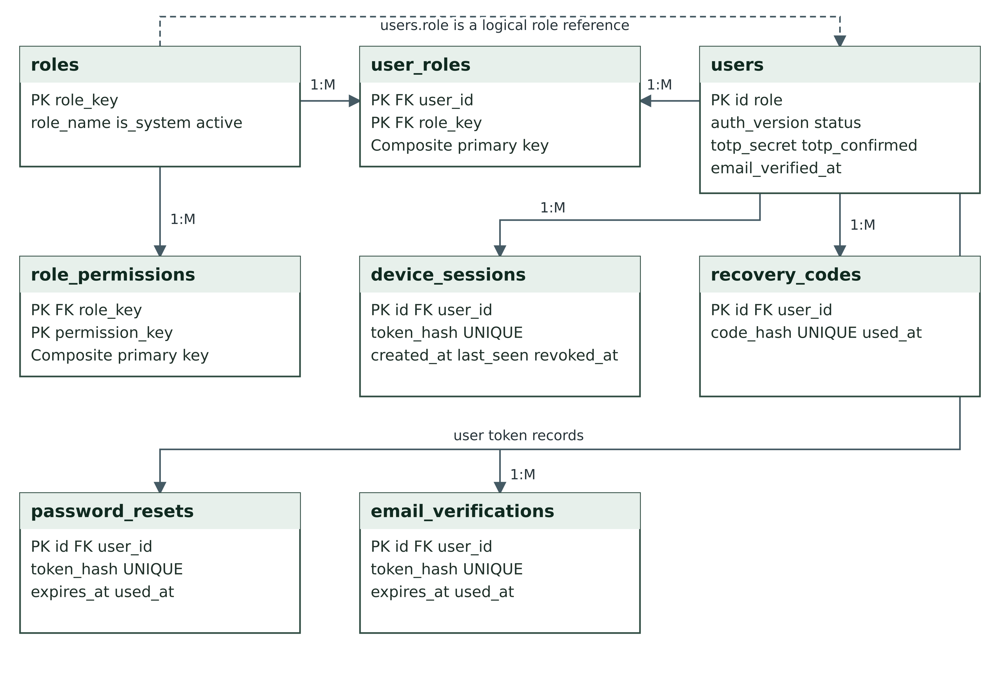
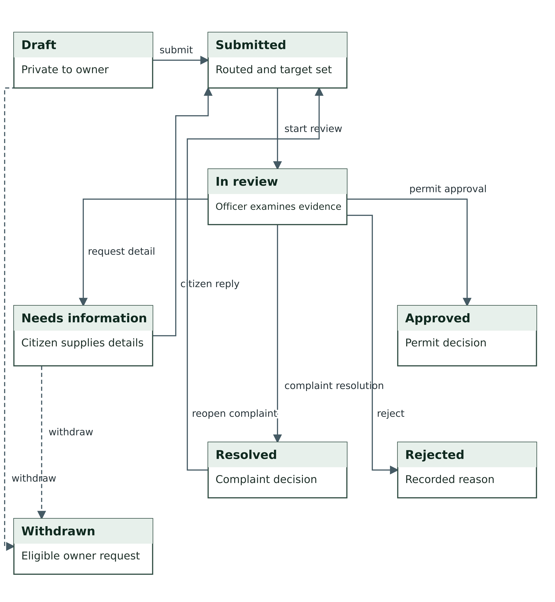
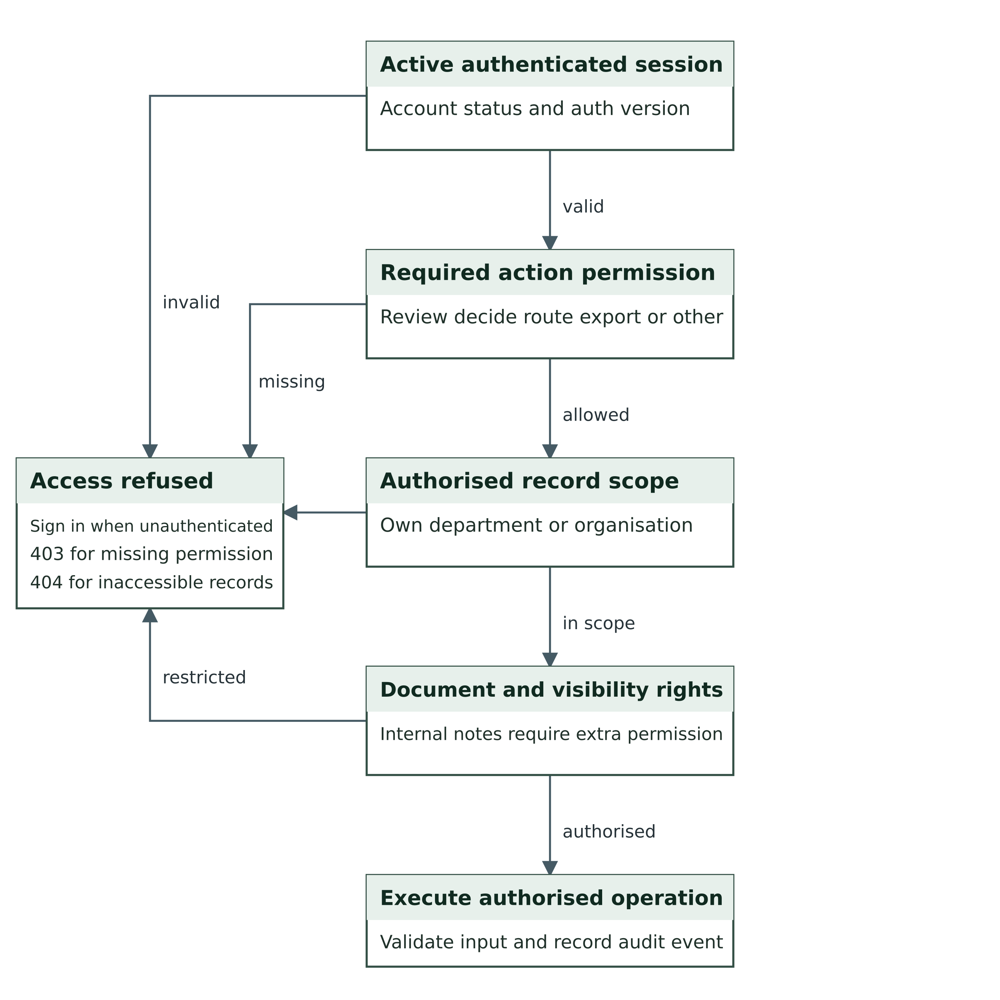
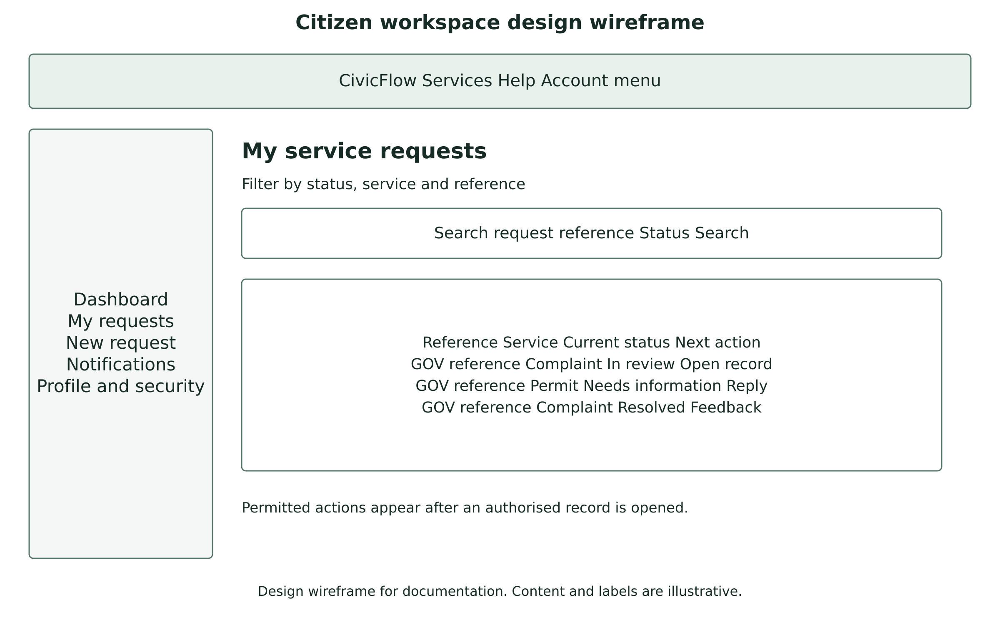

Diagram and interface gallery
All figures use repository-relative paths. PNG files display immediately, and SVG files remain editable. The wireframes are design views and the burndown is a proposed plan.
Application architecture

PNG and editable SVG.

Core request entity relationships

PNG and editable SVG.


Identity and access relationships

PNG and editable SVG.


Communications and oversight relationships

PNG and editable SVG.

Request state workflow

PNG and editable SVG.


Notification delivery and retry

PNG and editable SVG.

Permission and record access

PNG and editable SVG.


Use case view

PNG and editable SVG.

Submission and information reply sequence

PNG and editable SVG.

Single instance deployment topology

PNG and editable SVG.

Citizen workspace wireframe

PNG and editable SVG.


Staff queue wireframe

PNG and editable SVG.

Planned remaining backlog

PNG and editable SVG.

Mermaid sources
Original architecture and workflow sources and additional model sources.